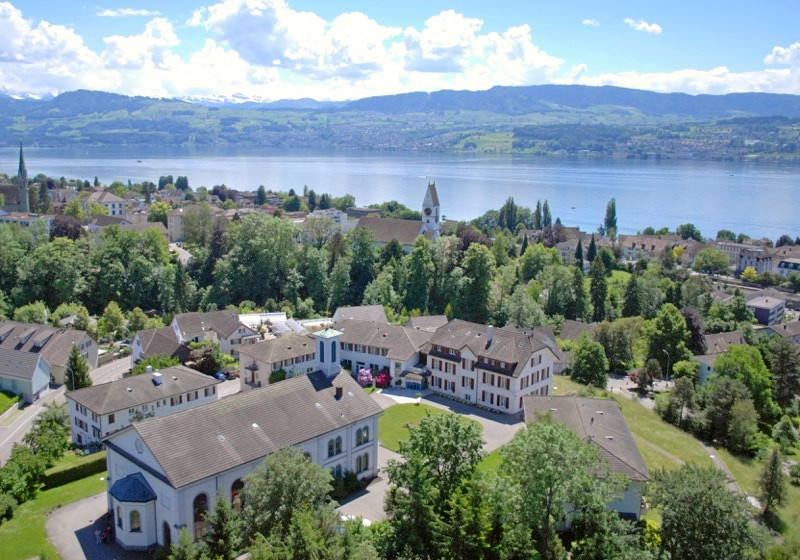

«Der Name der Dorothea Trudel von Männedorf ist ein weit über die Grenzen unsers Kantons hinaus bekannter. Man weiss in der ganzen Schweiz und in den an dieselbe angrenzenden deutschen Staaten, dass die ‹Heilige› in Männedorf seit einer Reihe von Jahren die verschiedenartigsten Krankheiten heilt, dass sie eine eigene ‹Gebetsheilanstalt› in Männedorf eingerichtet hat [...] und man weiss, dass die Trudel, ein zweiter Doctor Blumhard in Württemberg, ihre wahrhaft Wunderkuren lediglich durch Gebet und Handauflegung, höchstens noch mit Anwendung gewöhnlichen Oeles, also in ächt apostolischer Weise verrichtet.» (NZZ o.J. [wahrscheinlich 1861] aus Joris, 238)
Vorne das Ferien- und Tagungszentrum Bibelheim Männedorf mit Kapelle. Im Hintergrund die Pfarrkirche Männedorf und der Zürichsee. (Bild: Bibelheim Männedorf)
Leben und Wirken von Dorothea Trudel (1813–1862)
Als elftes und letztes Kind ist Dorothea Trudel in einer von der Frühindustrialisierung und Pauperisierung geprägten Familie im Zürcher Oberland geboren. Grossvater und Vater werden als jähzornig, gewalttätig und alkoholkrank beschrieben, während Grossmutter und Mutter als fromme Persönlichkeiten charakterisiert werden, die durch ihre Bibelfrömmigkeit, ihr Gebet und ihre Fürsorge lebensfördernd die Familiengeschicke geprägt haben sollen – Eigenschaften, die bei Dorothea Trudel ebenso wiederkehren werden. Als Fabrikarbeiterin konnte sie keine ausgedehnte Schulbildung geniessen. Sie näherte sich in ihrem Leben immer wieder nonkonformistischen Bewegungen an, wie etwa den Herrnhutern oder den Darbysten. Drei einschneidende Bekehrungserfahrungen führten sie in eine gebets- und bibelzentrierte Lebensweise ein – von ihren Biografen als Heiligungserfahrung im Sinne der Heiligungsbewegung gedeutet, die von einer stufenweisen und geistgewirkten Vervollkommnung des christlichen Lebens ausging und die Vorstufe der späteren Pfingstbewegung bildete. Selbst zeitlebens an einer Rückenverkrümmung leidend, betete sie im Jahr 1852 auf das wörtliche Verständnis von Jakobus 5,14f. hin für mehrere Arbeiter der Fabrik ihres Neffen. Als danach die Kranken Heilung erfahren haben, verbreitete sich die Nachricht und immer mehr Heilsuchende pilgerten zu ihr. Auf die Nachricht von der Gründung der Heilanstalt Bad Boll durch Johann Christoph Blumhardt hin schöpfte sie als Frau den Mut, ebenfalls Kranke bei sich aufzunehmen und für sie wochen- und monatelang auf Spendenbasis durch Pflege und Gebet zu sorgen. Sie wies jeden Anspruch zurück, eine Heilerin zu sein, und führte die Heilungen auf das Wirken Gottes zurück, da sich in ihnen das Reich Gottes proleptisch offenbare. Krankheiten führte sie auf die Sünde des Menschen zurück.
Im Kreuzfeuer der Kritik
Dorothea Trudel bewegte sich als Frau in zwei Männerdomänen: Medizin und Theologie. Ärzte sahen ihre Monopolstellung auf Heilung bedroht. Ein aufsehenerregender und politisch motivierter Prozess – bei dem auch der obige Zeitungsbericht entstand – bedrohte ihr Werk, das aber dennoch verteidigt werden konnte, teils durch die ausführliche Sammlung von authentischen Zeugnissen von Heilungen prominenter Personen. Aus kirchlichen Kreisen wiederum kam die Kritik auf, dass sie als Frau Andachten für Kranke und Bedienstete hielt und dass sie als Frau das Heim leitete. Anstoss erregte sie zudem mit ihren ungewöhnlichen Methoden der körperlichen Nähe zu den «Patienten»: Sie praktizierte die Handauflegung, schlief bei den Kranken, küsste und umarmte sie regelmässig.
Ein Zentrum der Heiligungsbewegung
Samuel Zeller, der als Nachfolger Dorothea Trudels die Gebetsheilanstalt Elim konsolidierte und institutionalisierte, gab nach ihrem Tod eine erbauliche Biografie heraus, die hohe Auflagen erreichte und im französischsprachigen und insbesondere im angloamerikanischen Raum weite Verbreitung und grossen Einfluss fand. Sowohl bei Frauenrechtlerinnen aus dem Réveil als auch bei namhaften Vertretern der nach ihrem Tod sich formierenden Heiligungs- und Heilungsbewegung erfuhr sie breite Rezeption, die in Männedorf eine bedeutende Lebensveränderung durch Heilung von körperlichen und seelischen Gebrechen erfahren haben wie etwa Otto Stockmayer, Elias Schrenk, Arnold Bovet, bedeutende Promotoren der Heiligungs- und Temperanzbewegung. Andere Persönlichkeiten blieben Männedorf verbunden wie Carl H. Rappard (St. Chrischona), Johann Friedrich Dändliker (Diakonissenhaus Bern) oder Robert P. Smith (bedeutendster Förderer der Heiligungsbewegung). In den weiteren Jahrzehnten wurden an die drei Dutzend Gebetsheilanstalten bzw. Erholungsheime nach dem Vorbild Männedorfs im In- und Ausland gegründet.
Männedorf heute
Ein Kuratorium leitet einen Komplex an Einrichtungen, wozu neben dem Ferien- und Tagungszentrum Bibelheim Männedorf auch ein Alters- und Pflegeheim sowie Alterswohnungen gehören. Dominiert wird das Areal durch die im Jahr 1897 errichtete Kapelle. Das Panorama sowie die friedliche Atmosphäre laden zur Ruhe und Besinnung ein. Das Erbe von Dorothea Trudel wird durch eine vom christlichen Glauben geprägte Zuwendung zu den körperlich und seelisch heilsuchenden Gästen weiterhin sicht- und spürbar.
Gergely Csukás ist Assistent am Institut für Historische Theologie an der Universität Bern.
Weitere Artikel von {{author.author}} finden Sie hier:
Zur Vertiefung:
- www.bibelheim.ch
- Stephan Holthaus: Heil – Heilung – Heiligung. Die Geschichte der deutschen Heiligungs- und Evangelisationsbewegung (1874–1909) (Kirchengeschichtliche Monographien 14), Giessen 2005.
- Elisabeth Joris: Ein Prozess als Ausgangspunkt. Zur Biografisierung der pietistischen Heilerin Dorothea Trudel, in: Ulrike Gleixner / Erika Hebeisen (Hg.), Gendering Tradition. Erinnerungskultur und Geschlecht im Pietismus, Korb 2007, 233–252